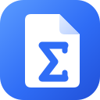

휩 AI to 한글(HWP)AI가 쓴 수식, 한글에 그대로
ChatGPT·Claude가 출력한 LaTeX를 한글 수식 편집기 문법으로 바꿉니다. 변환 결과는 바로 클립보드에 복사됩니다.
문서 속 수식도 한글 수식 개체로
HWP·HWPX 파일의 텍스트 수식을 수식 개체로 교체하거나, 마크다운 문서를 HWPX로 만듭니다. 파일은 내 브라우저에서만 처리됩니다.
수식 이미지를 끌어다 놓거나 붙여넣어도 인식합니다. 이미지는 내 브라우저 밖으로 나가지 않습니다.
한글 수식
변환되면 자동으로 클립보드에 복사됩니다.
미리보기
파일을 끌어다 놓거나
HWP, HWPX, 마크다운(.md) 파일을 지원합니다.
마크다운 텍스트는 이 탭에서 붙여넣어도 됩니다(⌘/Ctrl+V).
한컴오피스 한글에서 열 수 있습니다. HWP 파일이 필요하면 한글에서 다른 이름으로 저장하세요.
미리보기
마크다운 파일을 올리면 미리보기가 나타납니다.